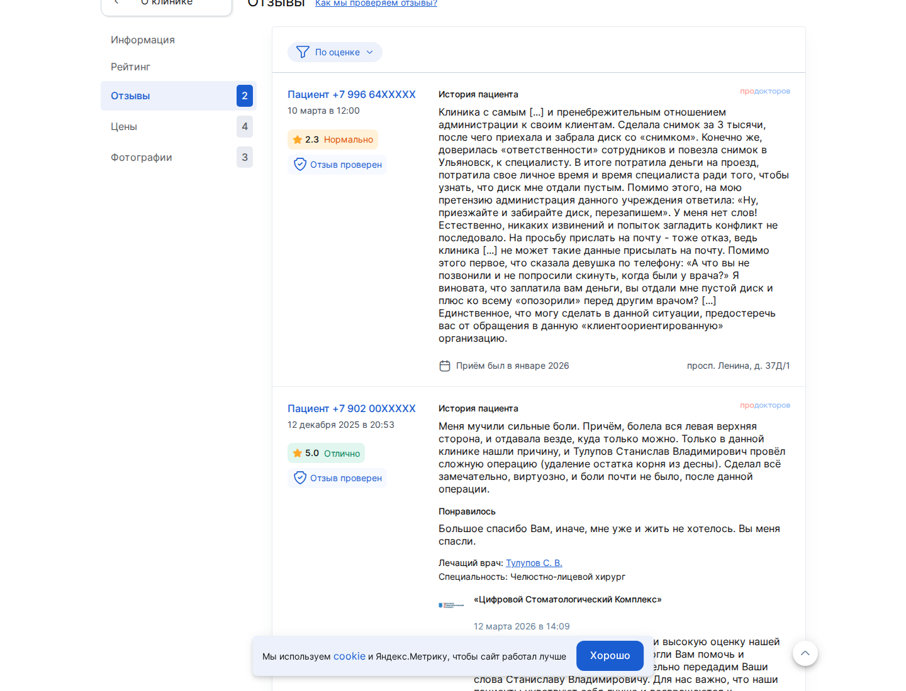
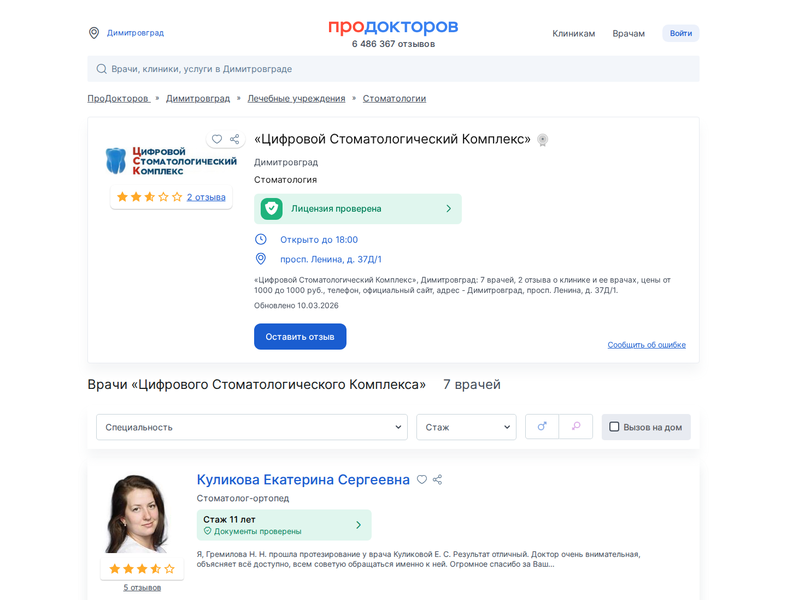
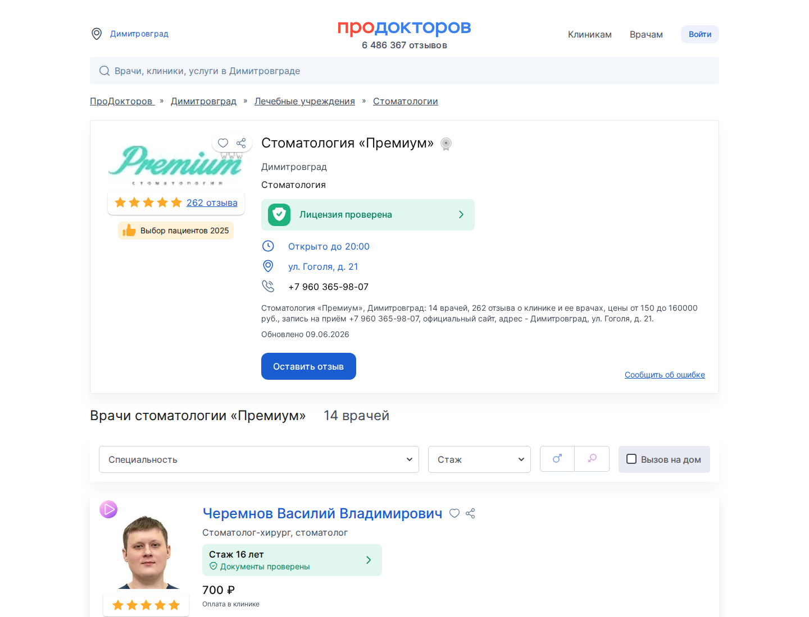
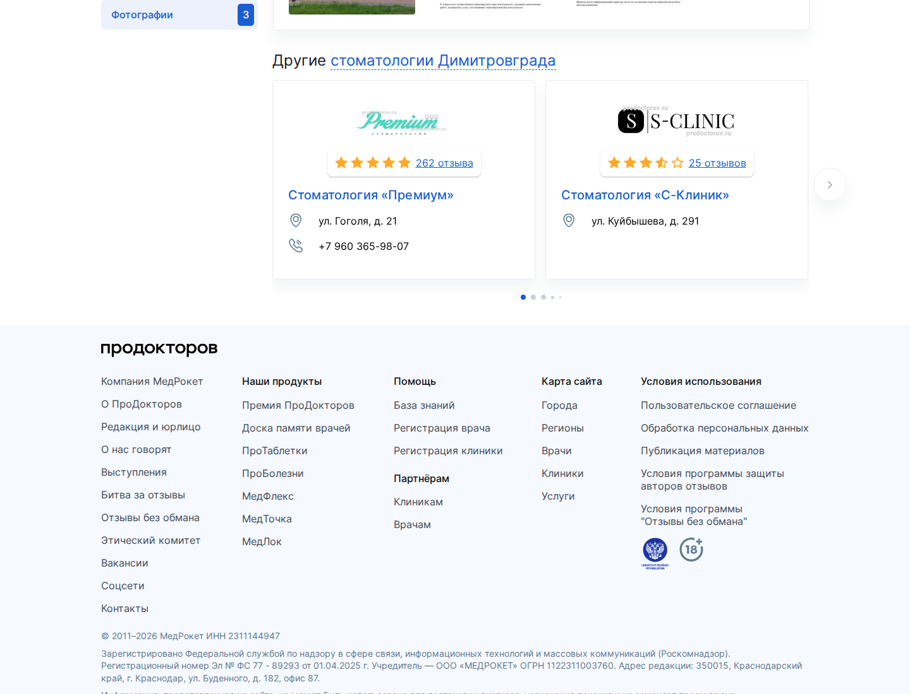
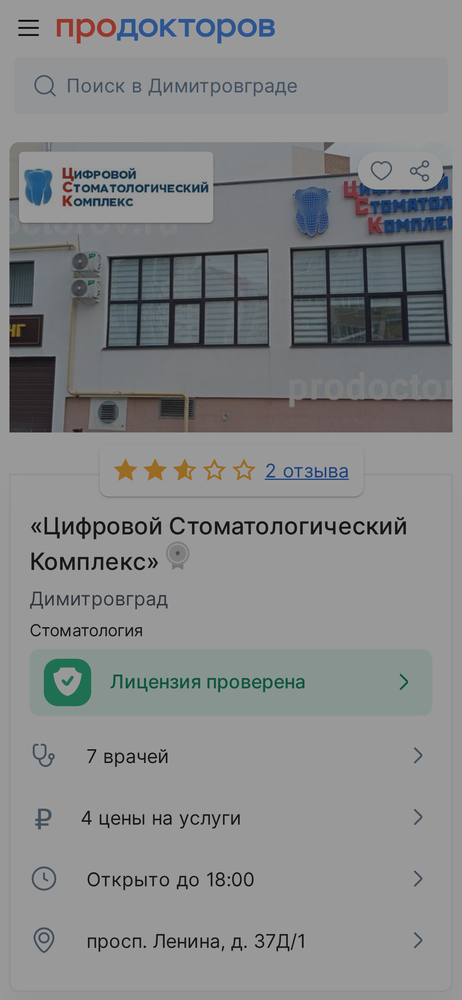
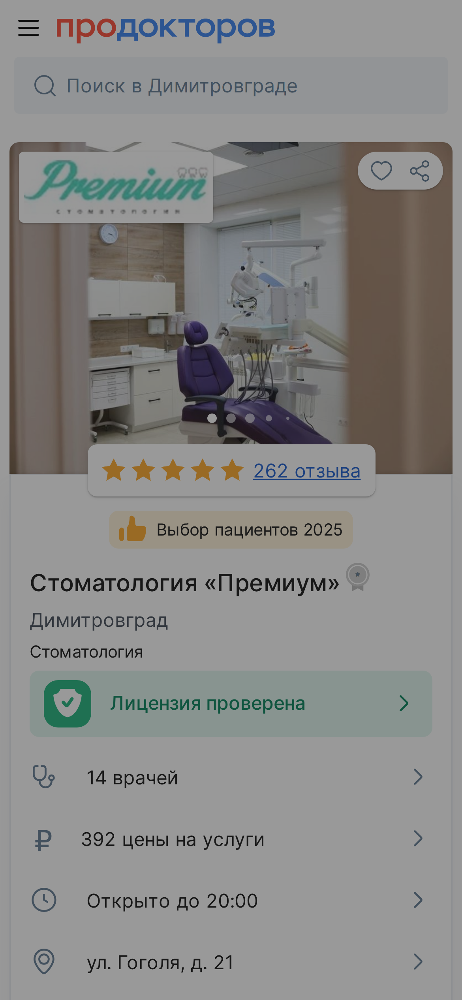

Как выглядит ваша карточка
Врачи, видео и запись: лицо клиники в выдаче

Видеовизитки нет
Пустой слот. Это и недобранный балл, и формат, который сильнее всего повышает доверие и запись. У сильных карточек города видео обычно есть.
Разбор карточки на ПроДокторов
Площадки берут деньги вперёд. Пациент идёт к тем, кто выше в списке. Я открыл вашу карточку так, как её видит человек, который прямо сейчас выбирает куда записаться. Ниже на скринах вашей карточки видно, где утекают записи и кто их забирает. За каждую утёкшую запись вы уже заплатили площадке. Я веду свои клиники на ПроДокторов и прохожу эти грабли сам.
Снимок карточки
Вот что видит пациент в вашей карточке. Каждый показатель ниже это не спортивная таблица, а записи, которые вы либо забираете, либо отдаёте соседу по списку. Карточка обновлена площадкой 10 марта 2026.
Балл ранжирования ~159–475 из 730, до 730 не хватает ~255.
Последний отзыв 12 марта 2026, 96 дн. назад.
Упущено позиций в карточке 8.
Рейтинг по врачам в карточке 2.9. Вес врачей около половины рейтинга клиники.
Карта баллов ПроДокторов
Позиция в общем списке города складывается из баллов ранжирования до 730. Каждая позиция вниз это пациенты, которые тапнули на клинику выше вас. Они уже искали стоматолога, дошли до списка, но записались не к вам. Самый красный резерв сверху, с него и начинаем.
| Параметр | Сейчас | Баллы | До цели |
|---|---|---|---|
| Онлайн-запись на услуги | ◐ частично | 12–100 / 100 | добрать |
| Онлайн-запись к врачам | ◐ частично | 12–100 / 100 | добрать |
| Автоматическая выгрузка цен | ◐ частично | 10–100 / 100 | добрать |
| Успешность записи в клинику за 30 дней | нужен кабинет | — / 100 | добрать |
| Звёздный рейтинг (звёзды×30) | ◐ частично | 75 / 150 | +75 |
| Клубная запись (Клуб ПроДокторов) | ✗ нет | 0 / 70 | +70 |
| Доступность записи ≥15 часов в сутки | нужен кабинет | — / 50 | добрать |
| Видеовизитка | ✗ нет | 0 / 10 | +10 |
| Запись по телефону | ✓ есть | 50 / 50 | ✓ держать |
Как выглядит ваша карточка
Пустой слот. Это и недобранный балл, и формат, который сильнее всего повышает доверие и запись. У сильных карточек города видео обычно есть.
Поток отзывов
Отзывы это главный сигнал доверия и топливо рейтинга. Вес отзыва со временем падает, поэтому важен ровный поток каждый месяц. На графике видно, в какие месяцы поток был и где просел.
Всего отзывов с датой 2. Сейчас вы собираете примерно 0.3 в месяц (среднее за последние месяцы). Последний отзыв 12 марта 2026, 96 дн. назад.
У сильнейшей карточки города «Стоматология «Премиум»» отзывов 262, у вас 2. Чтобы за год сократить разрыв, держите примерно 22 отзывов в месяц вместо нынешних 0.3.
Собирать отзывы на ПроДокторов непросто: модерация строгая, часть отзывов не доходит. Но за счёт отлаженных алгоритмов сбора (ссылка пациенту сразу после приёма, правильный момент просьбы, работа администратора по скрипту) число оставляемых отзывов реально усилить.

Сравнение с сильнейшей карточкой города
Сильнейшую карточку города делает не везение. Её делает процесс: объём свежих отзывов и ширина обвязки карточки. Это собирается дисциплиной, значит догоняемо. Ниже видно, где разрыв.


| Параметр | Вы | «Стоматология «Премиум»» | Вывод |
|---|---|---|---|
| Рейтинг | 2.5 | 5 | ваш рейтинг ниже 5.0, тянется свежими отзывами |
| Отзывы | 2 | 262 | ×131.0 у лидера, главный разрыв доверия |
| Врачей в карточке | 7 | 14 | больше точек входа пациента |
| Видеовизитка | ✗ | ✗ | ни у кого |
| Клуб ПроДокторов | ✗ | ✗ | ни у кого |
| Медали / награды | ✗ | ✗ | ни у кого |
Цифры соседей по публичным карточкам ПроДокторов. Отзывы и врачи достоверны, обвязка в листинге может быть неполной.
Балл и отзывы вытягиваются дисциплиной, тут бюджет не главный рычаг. Аукцион в платных разделах это отдельная история, там уже деньги. Сначала добираем то, что берётся без бюджета, потом смотрим по аукциону. Догоняемо в любом случае.
Кто рядом с вами
Это ваше реальное конкурентное поле: 12 клиник рядом, за тех же пациентов. Отсортированы по числу отзывов, ваша строка выделена.
| Клиника | Дистанция | Рейтинг | Отзывы | Врачей |
|---|---|---|---|---|
| Стоматология «Премиум» | 1.92 км | 5 | 262 | 14 |
| Стоматология «Президент» | 4.26 км | 4 | 33 | 1 |
| Стоматология «С-Клиник» | 3.09 км | 4.8 | 25 | 5 |
| Стоматология «Дельта-Денс» | 0.82 км | 3.5 | 16 | 6 |
| Стоматология «Евродент» на Гвардейской | 0.62 км | 3.1 | 12 | 3 |
| «Стоматология Ратниковых» | 4.18 км | 3.6 | 8 | 7 |
| Стоматология «ВитаСтом» | 1.24 км | 2.1 | 7 | 1 |
| Стоматология «Альфадент» | 4.18 км | 1.8 | 7 | 4 |
| Стоматология «НикоДент» на Ульяновской | 3.95 км | 4.2 | 6 | — |
| Стоматология «Дентал-д» | 3.66 км | 3.4 | 3 | 3 |
| Цифровой Стоматологический Комплекс (вы) | 0 км | 2.5 | 2 | 7 |
| Стоматология «Евродент» на Тореза | 0.6 км | — | 0 | — |
| Стоматология «СтомЛайн» | 3.32 км | 1.2 | 0 | 4 |
рейтинг снят со звёздной шкалы списка. У сильных клиник он почти у всех 5,0, поэтому решает не он, а объём свежих отзывов.
Реклама и ставки
Прямо в вашей карточке крутится блок «Другие стоматологии Димитровграда» с соседними клиниками. Пациент, который зашёл к вам, видит ссылки на конкурентов и может уйти к ним. Этот блок убирается только на старшем тарифе.

Кого показывают на вашей карточке (8): Стоматология «Премиум», Стоматология «С-Клиник», Стоматология «Дельта-Денс», «Стоматология Ратниковых», Стоматология «Евродент» на Гвардейской, Стоматология «Президент», Стоматология «Дентал-д», Стоматология «НикоДент» на Ульяновской.
Ставки спецразмещения из вашего кабинета:
| Раздел | Ваша ставка | Рекомендуемая | Вчера у лидера |
|---|---|---|---|
| Клиника / Общий список | — | — | — |
| doctor | — | — | — |
| disease | — | — | — |
| diagnostic | — | — | — |
| service | — | — | — |
Взгляд с телефона
Большинство пациентов открывают ПроДокторов с телефона. Это первый экран, по которому решают, записаться или листать дальше.


Я взял только то, что видит пациент в вашей карточке. То, что даёт записи, лежит глубже и снаружи его не видно в принципе: ваш точный балл ранжирования, реальная ставка аукциона по вашим услугам, расчёт во что обходится каждая позиция вниз. Снаружи диагноз, в кабинете деньги. Эту часть я собираю с владельцем по договорённости, когда мы работаем вместе.
Я веду свои клиники на ПроДокторов и прохожу эти грабли сам, поэтому говорю не из теории. Всё выше это диагноз снаружи. Цифры, которые дают записи, лежат в кабинете и снаружи их не видно: точный балл ранжирования, ваш тариф, реальные ставки аукциона по вашим услугам. Полный разбор я делаю с владельцем по договорённости. Захожу только в настройки карточки, вы показываете экран сами, к базе пациентов и обращениям я не лезу. Снимаем реальную картину, собираем дорожную карту по баллам и отзывам, добираем то, что даёт записи в первую очередь. Работаем на результат. Место в топе зависит и от самой клиники, гарантировать его я не буду. Но дам чёткое ТЗ что дооформить и что делать для выхода в топ. И проведу вас по нему.
Вы уже платите площадке. Сделаем так, чтобы она приводила пациентов, а не крутила конкурентов в вашей же карточке.
Разобрать мою карточку до записей